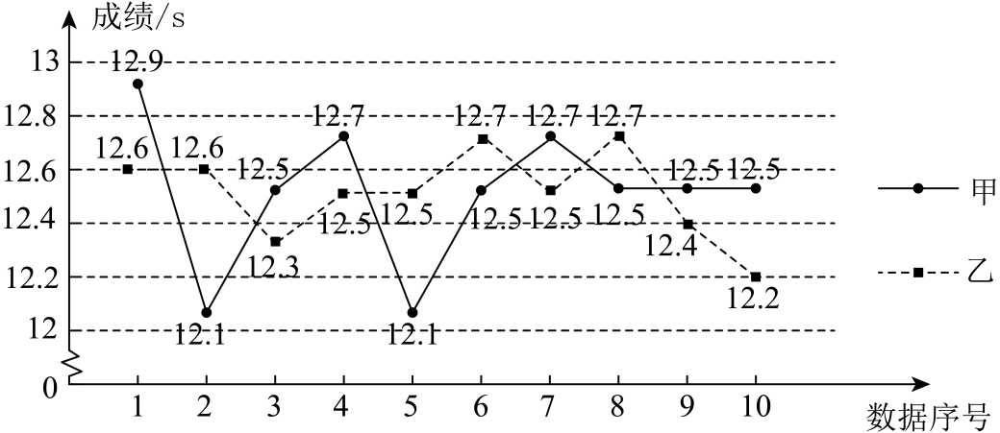

2025年北京市中考数学真题 · 数学解答题 第23题
23. 校田径队教练选出甲、乙、丙、丁四名运动员参加100米比赛．对这四名运动员最近10次100米跑测试成绩（单位：s）的数据进行整理、描述和分析．下面给出了部分信息．
a．甲、乙两名运动员10次测试成绩 折线图：
折线图：

b．丙运动员10次测试成绩：12.4 12.4 12.5 12.7 12.8 12.8 12.8 12.8 12.9 12.9
c．四名运动员10次测试成绩的平均数、中位数、方差：
| 甲 | 乙 | 丙 | 丁 |
平均数 | 12.5 | 12.5 | p | 12.5 |
中位数 | m | 12.5 | 12.8 | 12.45 |
方差 | 0.056 | n | 0.034 | 0.056 |
（1）表中m的值为_______；
（2）表中n_______0.056（填“>”“=”或“<”）；
（3）根据这10次测试成绩，教练按如下方式评估这四名运动员实力强弱：首先比较平均数，平均数较小者实力更强；若平均数相等，则比较方差，方差较小者实力更强；若平均数、方差分别相等，则测试成绩小于平均数的次数较多者实力更强．
评估结果：这四名运动员按实力由强到弱依次为_______．